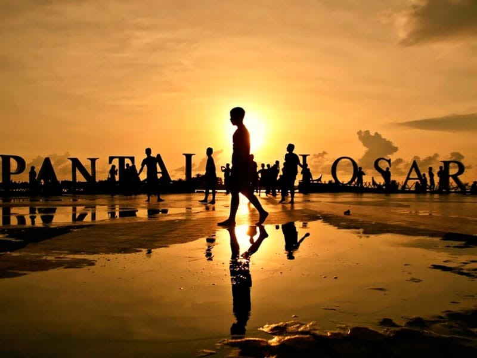

|
Pantai Losari. Pantai yang menjadi ikonnya Makassar ini wajib didatangi. Terdapat berbagai aktivitas seru untuk dilakukan bersama orang-orang tersayang.
Seperti obyek wisata lainnya yang mempunyai ciri khas khusus, begitu pula dengan Pantai Losari. Anda akan merasakan suasana berbeda yang tak akan didapatkan di daerah manapun. Jadi, jangan mengaku pernah berkunjung ke Makassar kalau belum mampir ke Pantai Losari yang sudah populer di mata nasional.
1. Liburan Sehat, Ikut CFD di Pantai Losari
Hawa pantai yang sejuk dan berangin menawarkan sensasi CFD yang tidak biasa. Duduk-duduk di tepi pantai sambil menikmati suara deburan ombak menjadi ciri khas yang mungkin tidak bisa kamu jumpai di tempat lain. Jangan lewatkan agenda mingguan warga Makassar ini saat kamu liburan ke sana, ya!
2. Nongkrong Seru di Pantai Losari Bahkan, kamu bisa bergabung bersama mereka, bertemu orang-orang baru, dan jugamenikmati fasilitas yang ada. Di sini juga tersedia free wifi, lho, sobat Jokka-Jokka. Jika bosan, kamu pun bisa bergeser sedikit ke kafe-kafe di sekitaran Pantai Losari.
3. Berfoto di Tulisan Ikonik Pantai Losari
Sobat Jokka-Jokka bisa berfoto dengan landscape pantai yang luas. Tapi, tiket.com nggak menyarankan sobat tiket datang untuk berfoto pada sore hari, ya. Sebab di sini bakal ramai banget dan bisa-bisa huruf yang mau kamu foto tidak terbaca karena harus tertutupi orang-orang.
4. Masjid 99 Kubah, Cantik Bergaya India
Desainnya yang sungguh menarik perhatian, ternyata merupakan ide arsitektur dari Gubernur Jawa Barat periode 2018-2023, Bapak Ridwan Kamil. Seperti yang kita tahu, Beliau memang memiliki jiwa arsitektur dalam mendesain masjid-masjid. Terbukti, Masjid 99 Kubah ini membuat masyarakat Makassar bangga.
Sesuai namanya, masjid dihiasi oleh 99 Kubah kecil. Makin istimewa karena kubah-kubah tersebut memiliki beragam warna seperti merah, jingga, dan kuning. Mereka berukuran kecil dan besar serta memiliki motif khas India yang membuatnya semakin unik. |
 |